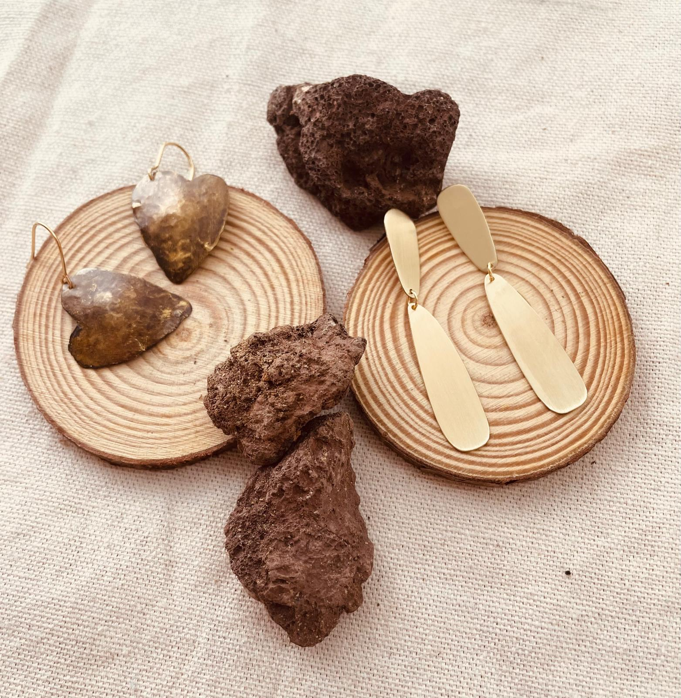
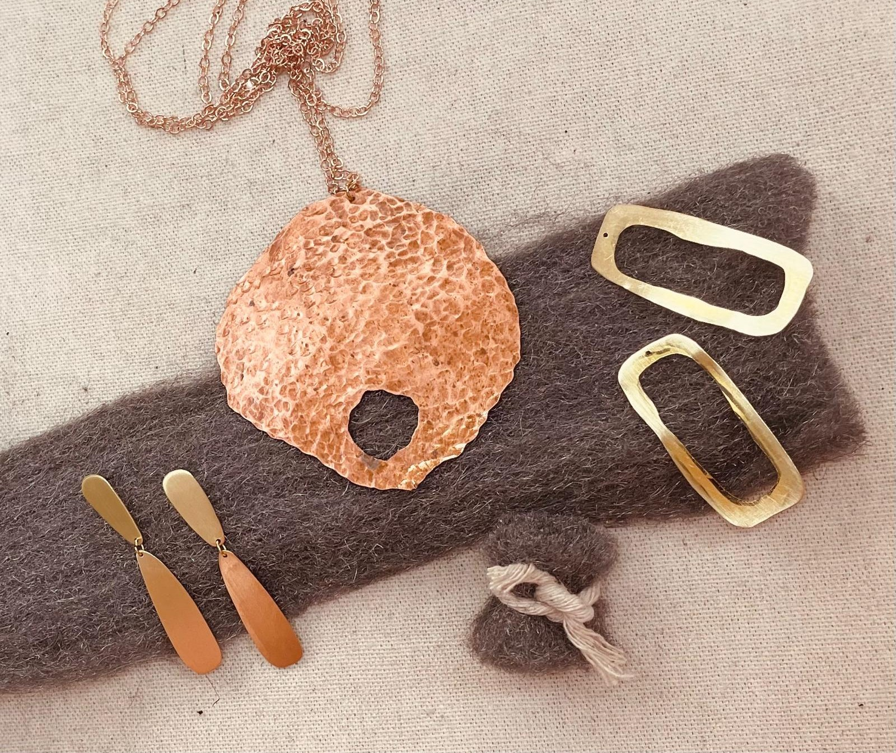

Para cuidar tu joya
Unas pocas costumbres diarias ayudan a que tu pieza se vea mejor y conserve su belleza artesanal durante mucho tiempo.


Recomendaciones básicas
- Guarda la joya en su caja y en un lugar seco.
- No la uses cuando hagas ejercicio.
- No la mojes ni la perfumes.
Sobre el latón
El latón es un material cambiante. Con el tiempo se oscurece y salen manchas opacas que pueden dar a tu joya un toque personal, único y muy bello. Pero si no te gusta, puedes limpiarlo así:
- Con bircabonato de sodio: Pon bicarbonato de sodio en un cepillo de dientes mojado y frota suavemente.
- Con un paño de lana de acero: Frota suavemente con un paño de lana de acero muy fino y humedecido. En la bolsa de tu pedido encontrarás un trocito que puedes conservar y utilizar cuando lo necesites.
¿Tienes dudas sobre el cuidado de tu pieza? Contacta con nosotros y te ayudamos.